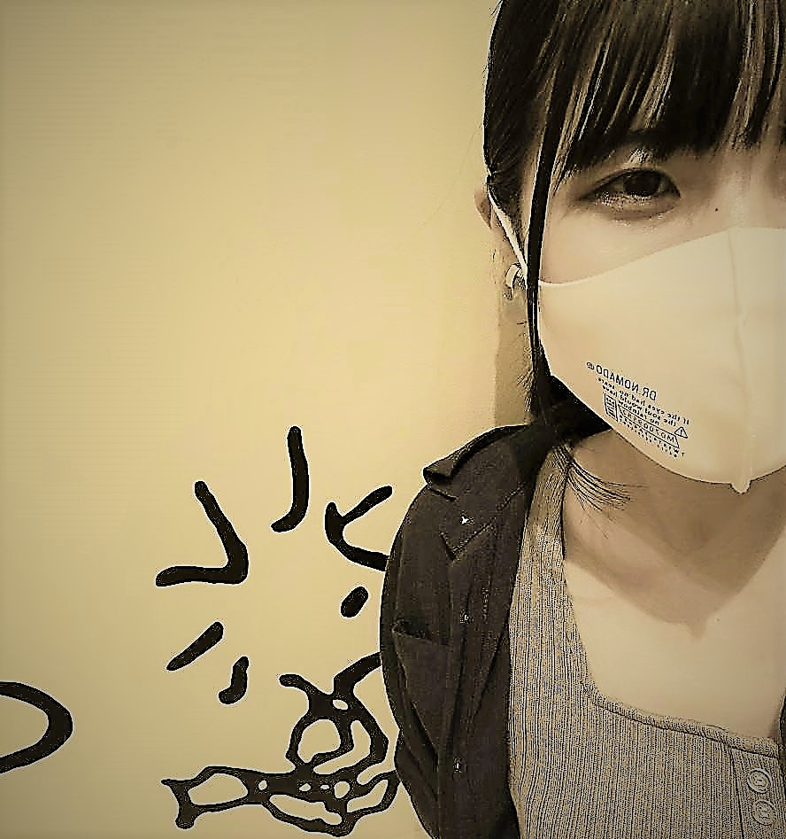

Always be yourself.
Always love yourself.
Always be thankful to everything aroud you.

PROFILE
西 あさぎ / ASAGI NISHI
1999年5月21日生まれ。21歳。埼玉県川口市在住。
獨協大学 経済学部 国際環境経済学科 在学中、2022年3月卒業見込み。
染色業を営む家庭に生まれ、"あさぎ"という色の名前を付けてもらい、
美術や図工が好きな幼少期を過ごした。
経済学部に入学したが、就職を考えた時にやはり自分が楽しいと思うことはデザインだと思い、
去年の冬、プログラミング未経験からテックアカデミーにてWEBデザインを2か月受講。
HTMLとCSSを学習し、現在も独学中。
中学・高校の部活は吹奏楽部（trombone）。
アルバイトは現在塾講師とカフェ（2年半以上継続中）。
ゼミでは、途上国の援助について研究中。
好きなこと：
絵を描くこと、歌うこと、踊ること、漫画・アニメを見ること、
おいしいものを食べること